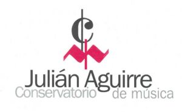

Biografía
Hernán Ríos nació en Buenos Aires en 1967.
Es pianista, improvisador, docente, compositor y productor, se ha convertido en un referente de la improvisación musical, dedicado a la investigación y desarrollo de la improvisación en la música popular argentina y latinoamericana.
Ha logrado un sonido original y auténtico en el que el jazz, el tango y el folklore conviven en una combinación única. Su original propuesta basada en la improvisación da lugar a una apertura en la que incorpora la percusión y la voz como elementos de su mensaje musical.
Su discografía personal abarca 12 discos y un DVD (todos con excelente repercusión en la prensa), además de participar en discos de otros artistas como músico invitado o productor.
Es uno de los fundadores del grupo “EL TERCETO” en 1993, proyecto que compartió con el baterista Norberto Minichillo y con el que consigue mostrar una nueva manera de abordar la música argentina, combinando la libertad y los conceptos del jazz con las raíces sudamericanas.
Se ha presentado en los escenarios más importantes de Argentina y en el exterior del país (Brasil, México, Estados Unidos, Uruguay y Paraguay) dando conciertos solo piano y con sus proyectos grupales, seminarios y talleres de improvisación.
Desde hace más 30 años lleva adelante una intensa actividad docente. Utilizando la improvisación como herramienta musical, ha creado un método de entrenamiento individual y grupal que viene desarrollando desde el año 1985.
Es docente en:

Es autor del libro “MÁS ACÁ DE LA IMPROVISACIÓN” (editado en abril de 2014 por Editorial “Melos”), en el que presenta su original propuesta pedagógica.
En el año 2007 forma un dúo con el percusionista Facundo Guevara, con el que ha grabado tres discos y se presenta regularmente en Argentina y el exterior del país.
Continuando en ese camino, ha compartido la música con diferentes músicos: Guillermo Vadalá, Lilián Saba, Leo Maslíah, “Chacho” Echenique, Raúl Carnota, Swami Jr., Mario Séve, Silvana Reina, Guillermo Capocci, Sonny Fortune, Rashied Ali, entre otros.